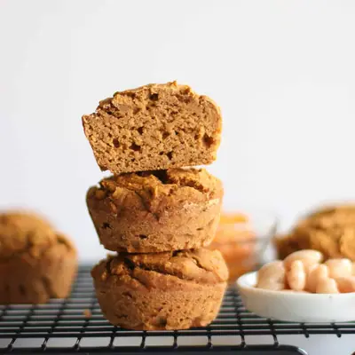

Healthy Pumpkin Banana Muffins

Ingredients
- 1 1/2 cup all purpose flour, white whole wheat flour, or spelt flour
- 1 teaspoon baking powder (aluminum-free)
- 1/2 teaspoon baking soda
- 1 teaspoon cinnamon
- 1/2 teaspoon nutmeg
- 1/4 teaspoon ginger
- 2 medium over ripe banana (240g weighed without the peel)
- 3/4 cup (180g) unsweetened pumpkin puree
- 1 egg ( see note)
- 1/2 cup (90g) canned white beans, rinsed and drained (look for no or low-salt-added)
- 1 teaspoon vanilla extract
- 3-4 tablespoons maple syrup or date syrup
- 1/4 cup dried fruits like raisins, chopped dates
- 1/4 cup chopped pecans, walnuts
Steps
- Preheat oven to 350 degrees Fahrenheit.
- In a large bowl, add all the dry ingredients. Stir to evenly combine.
- In a food processor/blender, add all the wet ingredients. Puree until smooth.
- Combine the wet ingredients into the dry ingredients and combine everything together. Don't overmix.
- Divide batter evenly into a greased, lined or silicone 12-cup muffin pan. Bake for 20-25 minutes, until inserted toothpick comes out clean. Allow the muffins to cool for 3-5 minutes before transferring to a wire rack to cool completely.
Recipe by Min Kwon · Kidfriendly Meals, from MJ and Hungryman. Saved here for personal use; the original has the full notes, tips and photos. Open original